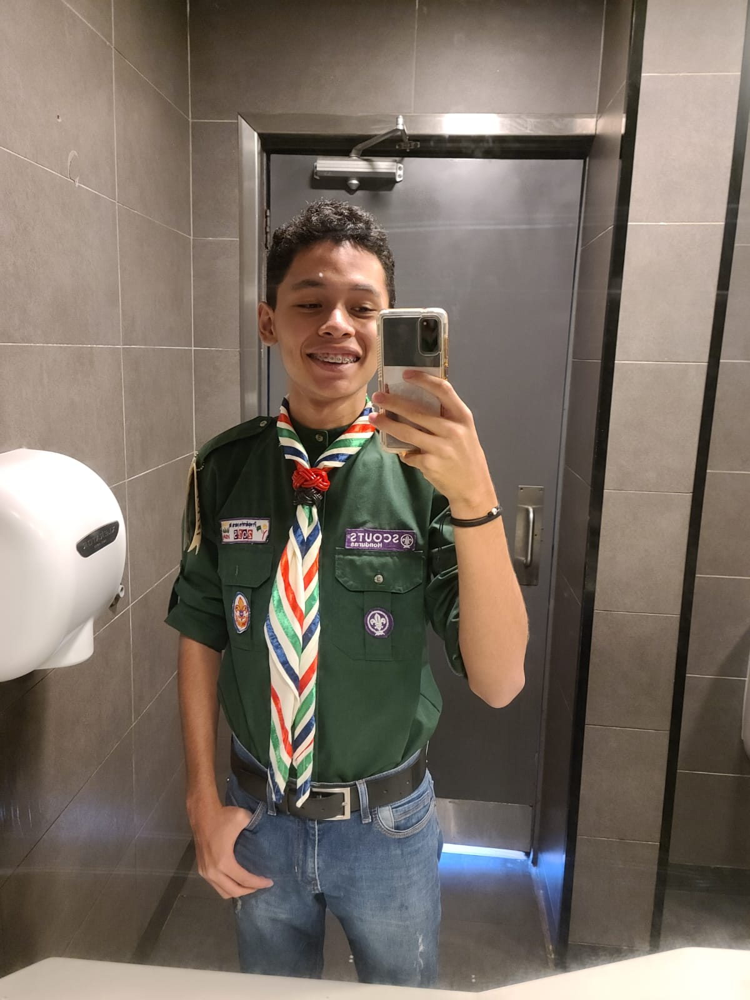

 |
Mi nombre es Rogel Fernano Flore Machado, tengo 17 años y actualmente curso el último año de bachillerato en informática. Me interesa mucho el área de la tecnología, ya que me permite desarrollar habilidades creativas y lógicas al mismo tiempo. Me esfuerzo por seguir aprendiendo y mejorar constantemente mis conocimientos para prepararme para futuros retos académicos y personales.
Formo parte del movimiento scout, una experiencia que ha influido mucho en mi forma de pensar y actuar. Gracias a ello he aprendido valores importantes como la responsabilidad, el respeto, el trabajo en equipo y el liderazgo. Disfruto vivir cada actividad al máximo, especialmente cuando participo en caminatas, campamentos y eventos scouts tanto regionales como nacionales, donde tengo la oportunidad de conocer personas nuevas, compartir experiencias y aprender de distintas culturas y formas de vida.
Entre mis hobbies está practicar deportes con mis amigos, ya que me gusta mantenerme activo y compartir momentos divertidos con ellos. También disfruto jugar videojuegos en mi consola en mis tiempos libres. Me gusta salir a caminar con mi grupo scout y conectar con la naturaleza, especialmente cuando se trata de acampar y experimentar la vida en el campo, actividades que me ayudan a despejar la mente y valorar el entorno natural.
Me considero una persona que busca vivir la vida al máximo, aprovechando cada oportunidad para aprender algo nuevo y crear buenos recuerdos, procurando siempre avanzar sin arrepentimientos y con una actitud positiva hacia el futuro. |